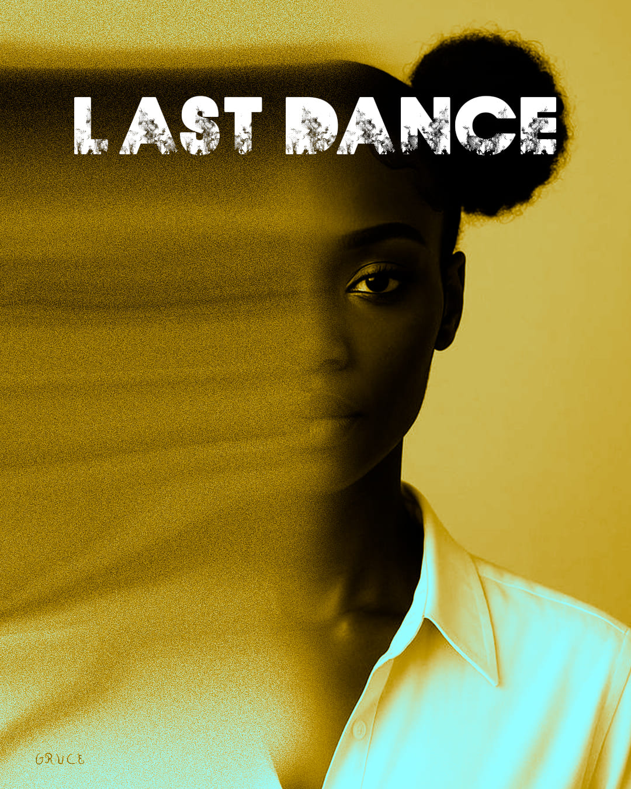

Cette affiche intitulée Last Dance explore une approche visuelle minimaliste et impactante à travers un portrait fragmenté. L’objectif était de créer une tension visuelle en jouant sur la disparition progressive du visage, tout en conservant un point focal fort. Le contraste entre les tons chauds et froids renforce l’émotion et l’identité graphique du visuel.
Le projet a débuté par un travail de sélection et de cadrage du portrait afin de définir une composition équilibrée. J’ai ensuite expérimenté avec des effets de dispersion et de texture pour créer cette transition visuelle entre présence et effacement. Enfin, j’ai travaillé la colorimétrie et la typographie pour accentuer l’impact visuel et donner une cohérence globale à l’affiche.